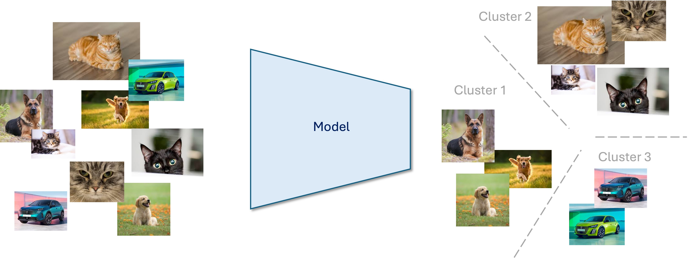
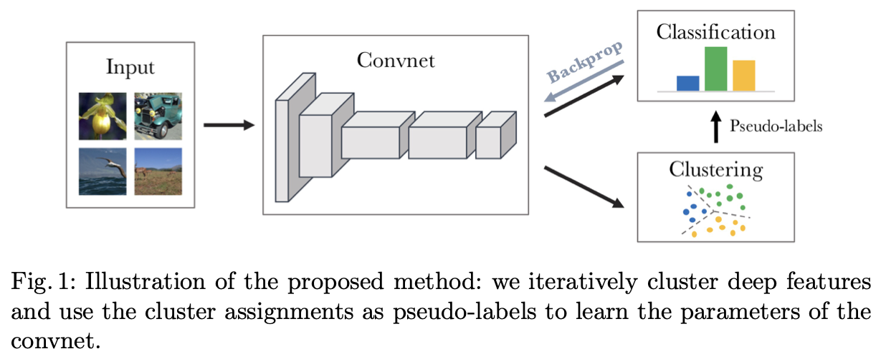
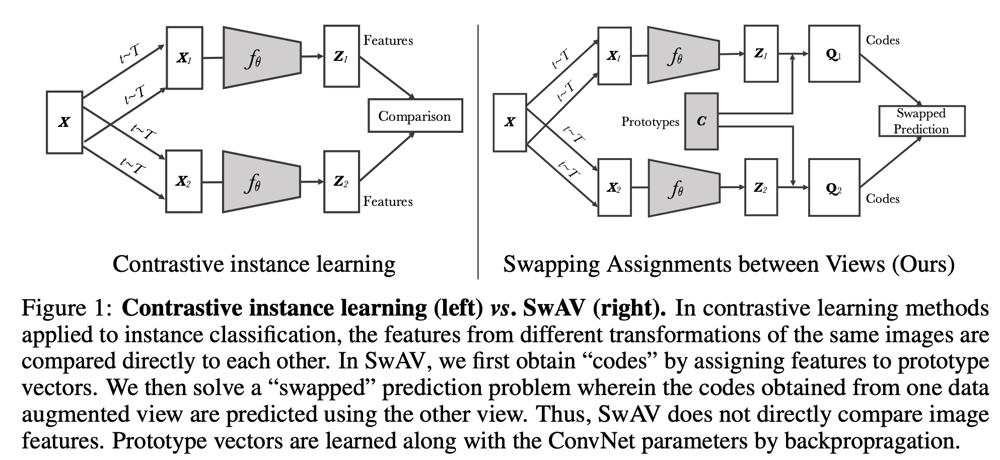
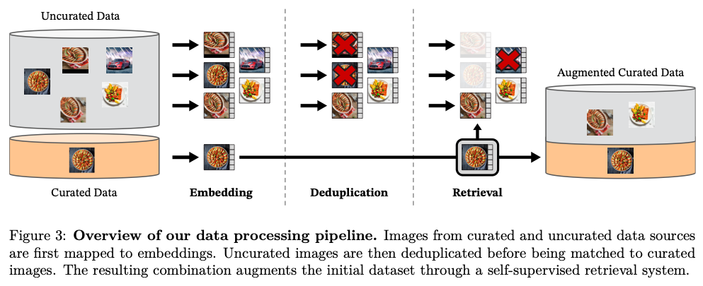
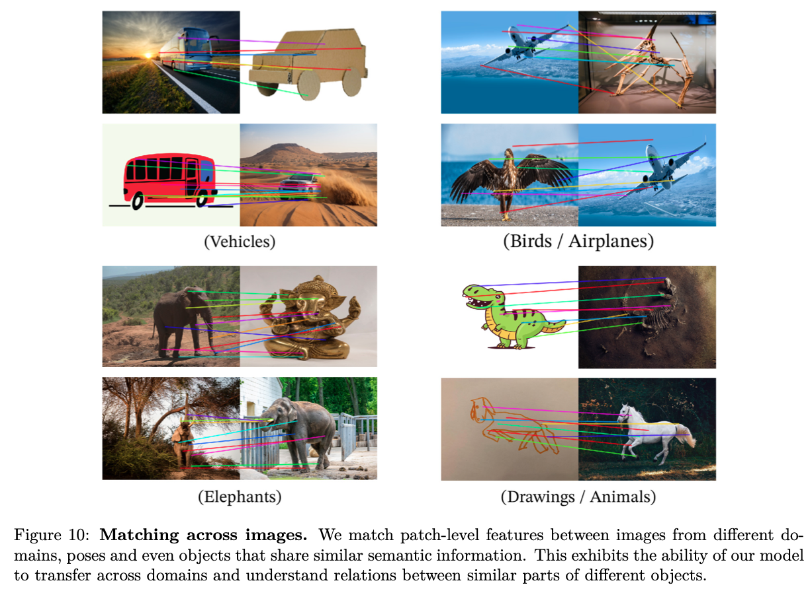
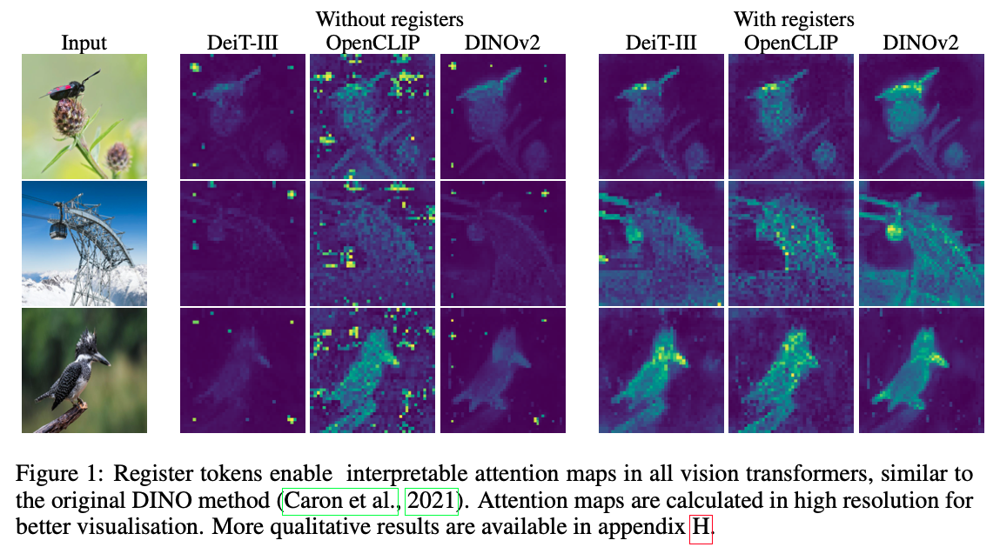

Overfit#9: DINOv2 explained: Learning robust visual features without supervision
Motivation
Every Data Scientist once used a ResNet50 backbone pre-trained on ImageNet to extract visual features for classification or segmentation. These models are usually pre-trained by keeping the encoder part of a CNN after a supervised classification training.
Don't get me wrong. Such models perform well for most use cases. BUT ...
The main weakness of these models is their training dataset. First, Supervised Learning requires high-quality annotated datasets. Sadly for us, these datasets are expensive to scale. Second, these datasets often lack diversity and are not representative of real-life. This leads to poor features for out-of-domain (OOD) images.
Hopefully, this challenge is similar to the one faced with embedding models a few years ago in NLP. Researchers showed that we could leverage the knowledge of huge datasets with no labels, thus bypassing the need for annotation. They also discovered that the Transformers architecture performance scaled gracefully with the dataset and model sizes.
Can we leverage these techniques to train a BERT-like embedding model for images?
DINOv22 is a Self-Supervised Learning method to train image encoders, without supervision. It builds on top of previous SSL works for Computer Vision like ViT, Masked Auto Encoders and iBOT and achieves impressive results on pretty much every downstream task. It is the continuation of DINO1, a previous work from Meta (2021) that paved the way toward self-DIstillation with NO labels.
Introduced by Meta in early 2023, DINOv2 has since settled itself as one of the go-to technique to train large visual encoders.

A gentle introduction to Contrastive Learning
What is a good embedding model? A simple definition could be:
Similar images should be close in the latent space. On the opposite, dissimilar images should to be far away from each other.
Contrastive learning is a set of methods to achieve this property. Historically, most contrastive methods rely on a positive pairs VS negative pairs paradigm. Positive pairs are similar images, i.e 2 pictures of dogs, of castles, of the same person. Negative pairs are pictures of dissimilar labels.
Building negative pairs is easy: sample two random images. If your dataset is large enough, drawing a similar image is highly unlikely. Building positive pairs is more complex because we have no annotation in our dataset. A simple technique is to augment an image (rotation, blur, contrast ...) to get two slightly different images.
You now have the basics of contrastive learning. Let's review a standard contrastive learning technique - SimCLR - to understand its drawbacks. This will give us the motivation behind some unintuitive choices in DINOv2 and related work.
SimCLR7 (Simple framework for Contrastive Learning of visual Representations) puts these ideas into practice. Take a mini-batch of N images. Augment each image twice to build N positive pairs and 2(N-1) negative pairs. Then train an embedding network to minimize the distance between positive pairs and to maximize the distance between negative pairs.
SimCLR works well under one condition: it requires large batch sizes (>1024). The plot below, shows the degradation of the performance with the batch size. Intuitively, that means that SimCLR requires a lot of negative samples to space the embeddings in the latent space.
This is problematic, because large batch sizes mean large memory usage. That is why DINO authors chose another technique called self-distillation, more on that later.
Pre-training
In the paper, we can read:
We learn our features with a discriminative self-supervised method that can be seen as a combination of DINO and iBOT losses with the centering of SwAV (Caron et al., 2020). We also add a [Koleo] regularizer to spread features and a short high-resolution training phase.
To keep things simple, let's ignore SwAV for the moment. We will come back to it later. What the authors are telling us is that DINOv2 loss is a sum of three terms. Let's dive into each term to understand the motivation behind it.
Image-level loss (DINO)
In Transformers and ViT, the embedding of the whole sequence is often computed from an extra [CLS] token that summarizes the semantics of the sequence. For instance in classification tasks, the [CLS] embedding is fed to the MLP classifier to predict a class/a next token ...
The DINO loss aims at minimizing (resp. maximizing) the distance between the image embeddings of similar (resp. dissimilar) images. It is an image-level loss.
How are these meaningful [CLS] embeddings learnt?
DINO uses a different paradigm called self-distillation. Self-distillation is a process of training a student model \(\theta_s\) to mimic the outputs of a teacher model \(\theta_t\).
DINO reuses the data augmentation idea, to generate \(V\) versions of an image \(\mathbf{x}\), called views.The authors discriminate global views (large crops) and local views (small crops). Based on a local view \(\mathbf{x}_1\), the student network is then asked to predict the embeddings of the teacher network, that was fed with a more global view image \(\mathbf{x}_2\).
Why does that work?
According to the authors this training technique encourages “local-to-global correspondences".
- The self-distillation process trains the network to embed the image regardless of the applied transformation = learns robustness
- In some sense, the student is asked to predict global features from a local crop of the image. This is similar to Masked Auto Encoders4, where the student reconstructs the patch from a condensed representation and learns to fill the cropped parts. Those tasks require a strong semantic understanding of the image by the student = learn image understanding
What is the DINO loss?
The student learns to mimic the output distribution of the teacher, a K-dimensional 1d-vector.
Cross-entropy is thus a suitable loss function for this task. The teacher predictions \(p_t\) are the targets. The student predictions \(p_s\) are the predictions. CE requires scores between 0 and 1, so the student and teacher outputs go through a softmax activation function.
Note that the teacher outputs are centered and that the softmax contain a temperature parameter. More on these two in the Training stabilization and SwAV sections.
The teacher is built from a Exponential Moving Average (EMA) of the student. During the back-propagation, the teacher is frozen (stop-gradient), only the student is updated by gradients. The authors tried many other techniques like copying the last version of the student, but the performance decreased significantly or even collapsed.
To summarize, here is the pseudo-code for DINOv1:
# PSEUDO-CODE OF DINOv1, from Caron & al. (2021)
# gs, gt: student and teacher networks
# C: center (K)
# tps, tpt: student and teacher temperatures
# l, m: network and center momentum rates
gt.params = gs.params
for x in loader: # load a minibatch x with n samples
x1, x2 = augment(x), augment(x) # random views
s1, s2 = gs(x1), gs(x2) # student output n-by-K
t1, t2 = gt(x1), gt(x2) # teacher output n-by-K
loss = H(t1, s2) / 2 + H(t2, s1) / 2
loss.backward() # back-propagate
# student, teacher and center updates
update(gs) # SGD
gt.params = l * gt.params + (1 - l) * gs.params
C = m * C + (1 - m) * cat([t1, t2]).mean(dim=0)
def H(t, s):
t = t.detach() # stop gradient
s = softmax(s / tps, dim=1)
t = softmax((t - C) / tpt, dim=1) # center + sharpen
return -(t * log(s)).sum(dim=1).mean()
How different is the DINO's approach from SimCLR's?
An interesting property of DINO is the minimal impact of small batch sizes. DINO supports much smaller batch sizes, like 128 enabling 1-GPU training for a 1B model!
Another major difference with SimCLR is the absence of an explicit repulsive/contrastive term. In DINOv1, the contrastive mechanism is implicit via diverse views. As we will see later, in DINOv2, the authors introduced additional implicit and explicit mechanisms to reinforce this effect.
Warning
I intentionally let the SwAV centering under silence for the moment, to split concepts. DINOv1 didn't use it, and I think it is easier to explain its addition in a separate section. Details are coming, I promise.
Patch-level loss (iBOT)
The DINO loss ensures that the image-level embeddings are meaningful, but what about the patch embeddings? In an ideal setup, it would be nice that similar (resp. dissimilar) parts of an image have similar (resp. dissimilar) embeddings. For instance, meaningful and diverse patch embeddings would enable out-of-the-box segmentation of an image. Or finding the most similar patches in two images ... This is the intuition behind the iBOT loss (Image BERT pre-training with online tokenizer5).
Paper: We randomly mask some of the input patches given to the student, but not to the teacher. We then apply the student iBOT head to the student mask tokens. Similarly, we apply the teacher iBOT head to the (visible) teacher patch tokens corresponding to the ones masked in the student. We then apply the softmax and centering steps as above, and obtain the iBOT loss term.
The task is really close to the BERT pre-training paradigm in NLP, in which the model predicts the masked tokens. Btw, the loss is almost the same as \(\mathcal{L}_{DINO}\):
with \(i\) the indices of the masked tokens.
Interesting fact: In the iBOT paper, the DINO and the iBOT heads were tied. In DINOv2, the authors used separate MLP heads for the DINO and iBOT predictions, claiming superior performance when scaling ... It is interesting to see diverging opinions in such similar papers.
KoLeo regularizer
The Koleo regularizer is an addition of DINOv2 on top of DINO, taken from the similarity search community.
Motivation: A good embedding model should use all its feature space and should push distinct images far away from each other. This property is especially well-suited for nearest-neighbor search tasks (e.g. retrieval).
The Koleo regularizer is a simple contrastive term, that maximizes the distance between an image and its closest neighbor in the batch. Given a set of n vectors \((x_1, . . . , x_n)\), it is defined as:
where \(d_{n, i} = \min_{j \neq i} \lVert x_i − x_j \rVert\) is the minimum distance between \(x_i\) and any other point within the batch.
My guess: In SwAV, the repulsion is implicit. Adding the Koleo regularizer is a cheap way to add an explicit repulsive force. I guess that gave an extra control on the latent space. Moreover, the Koleo regularizer only uses samples from the current batch, so it doesn't add much compute and memory overhead.
Training stabilization
Large SSL models are prone to collapse during training. To stabilize the training, DINO used two opposite mechanisms:
-
Teacher centering: Subtract a running mean of past teacher predictions from the current teacher output. Centering balances the activations, preventing one dimension from dominating and reducing the risk of collapse to degenerate solutions. This has a balancing role.
Intuition: By centering the teacher targets, the predictions maintain a balanced output across dimensions, making it less likely for the model to rely too heavily on any specific direction or trivial constant output.
-
Softmax with Temperature: The softmax function with temperature \( T \) is used to control the sharpness of the distribution of probabilities. It is defined as:
\[ \text{Softmax}_i(\mathbf{z}, T) = \frac{\exp(z_i / T)}{\sum_{j=1}^{n} \exp(z_j / T)} \]For small values of \(T\), this has a sharpening role. It avoids the extreme situation of an uniform output distribution, i.e. all images are mapped to the same embedding.
Intuition: As \( T \) approaches 0, the expression simplifies due to the exponential growth of the largest value of \( z_j / T \). The output becomes a one-hot vector, where the position corresponding to the maximum value in \( \mathbf{z} \) is 1, and all other positions are 0.
\[ \lim_{T \to 0} \text{Softmax}_i(\mathbf{z}, T) = \begin{cases} 1, & \text{if } i = \arg \max_k z_k \\ 0, & \text{otherwise} \end{cases} \]Temperature value Effect \( T > 1 \) Increases the spread of the output probabilities, making them more uniform. \( T < 1 \) [OUR CASE] Sharpens the probabilities, making the largest values more dominant. \( T = 1 \) Recovers the standard softmax function.
That explains the CE forward computation of the aforementioned pseudo-code:
# C: center (K)
# tps, tpt: student and teacher temperatures
def H(t, s):
t = t.detach() # stop gradient
s = softmax(s / tps, dim=1)
t = softmax((t - C) / tpt, dim=1) # center + sharpen
return -(t * log(s)).sum(dim=1).mean()
SwAV centering
The last addition of DINOv2 is the Sinkhorn-Knopp centering applied to the teacher, a training stabilization concept introduced by SwAV: Swapping Assignments between Views (another paper from Meta). SwAV is a self-supervised learning (SSL) method that employs online clustering to stabilize training and improve representation learning.
WTF are you talking about ... What has clustering to do with visual encoders?
Consider a dataset of images. Embed these images using a pre-trained model. Assume the embedding space is diverse enough for the points to be grouped into \(K\) clusters \(C_1, C_2, ..., C_K\), representative of the dataset.
With fixed clusters, the cluster assignments can be treated as a \(K\)-class classification problem. This task can be used as an SSL objective for training the model.

What makes SwAV's approach different?
Previous clustering-based SSL approaches used an offline clustering algorithm8 to group samples into target clusters (e.g., K-Means). Yet, even if the objective in clustering is tractable, it does not scale well with the dataset as it requires a pass over the entire dataset to form cluster assignments that used as targets during training9. Moreover, these methods often led to degenerate solutions, where a trivial outcome is assigning all points to the same cluster. Related works employed various tricks to mitigate this issue, but these solutions were not always stable.

SwAV addresses these challenges by (1) learning centroids as model parameters and (2) enforcing an equipartition constraint, ensuring an even distribution of samples across the \(K\) clusters. In practice, SwAV maps a batch of \(B\) samples to \(K\) clusters and applies the equipartition constraint using a cost matrix9. This setup resembles an optimal transport problem, which is relaxed for faster computation. The resulting loss function is:
Intuitively, aligning the predicted clusters \(C^\top Z\) with the label clusters \(Q\) maximizes the function. The entropy term \(H(Q)\) acts as regularization to enforce equipartition.
This relaxed problem has a fast, computable solution. The target clusters are determined as:
where \(u\) and \(v\) are renormalization vectors in \(\mathbb{R}^K\) and \(\mathbb{R}^B\), respectively. These vectors are computed iteratively using the Sinkhorn-Knopp algorithm, which lends its name to the centering technique.
More about the equivalence to an optimal transport problem ...
The DINOv2 method references SwAV, which in turn points to the paper "Self-labelling via simultaneous clustering and representation learning"10. This paper provides a clear explanation of the motivation behind using the SK algorithm, making it a recommended read for a deeper understanding.
Let's summarize
SwAV jointly learns target clusters and trains the model to assign features to clusters. The target clusters are computed online using the SK algorithm from the features and the learned clusters.
Enough theory. How is it implemented?
SwAV uses a finite set of prototypes (\(C\)), learnable parameters that act as centroids summarizing the feature space. These prototypes project features (\(Z\)) into codes (\(Q\)), representing soft cluster assignments. The codes indicate the similarity between features and prototypes (as shown in the expression for \(Q^*\)).
The core idea is to predict the code (cluster assignment) of one augmented view using the features from another view (that is the swap of SwAV). This ensures that representations are invariant to augmentations while being semantically meaningful.

SwAV Loss: How Does It Work?
SwAV aligns cluster assignments (codes) between views rather than comparing raw features. Its loss function is:
where: \(H\) is the cross-entropy loss, \(z^{t}\) are the features, \(q^{t}\) are cluster assignments (codes) from the features.
In simple terms, the first term aligns the teacher’s embedding of view 1 (\(z_1^{t}\)) with the cluster assignment (\(q_2^{s}\)) of view 2. The second term swaps the roles of view 1 and view 2. This swapping mechanism maps both views to consistent clusters, enforcing augmentation invariance.
SwAV Pseudo-code for the curious ones (from the paper9)
# C: prototypes (DxK)
# model: convnet + projection head
# temp: temperature
for x in loader: # load a batch x with B samples
x_t = t(x) # t is a random augmentation
x_s = s(x) # s is a another random augmentation
z = model(cat(x_t, x_s)) # embeddings: 2BxD
scores = mm(z, C) # prototype scores: 2BxK
scores_t = scores[:B]
scores_s = scores[B:]
# compute assignments
with torch.no_grad():
q_t = sinkhorn(scores_t)
q_s = sinkhorn(scores_s)
# convert scores to probabilities
p_t = Softmax(scores_t / temp)
p_s = Softmax(scores_s / temp)
# swap prediction problem
loss = - 0.5 * mean(q_t * log(p_s) + q_s * log(p_t))
# SGD update: network and prototypes
loss.backward()
update(model.params)
update(C)
# normalize prototypes
with torch.no_grad():
C = normalize(C, dim=0, p=2)
# Sinkhorn-Knopp
def sinkhorn(scores, eps=0.05, niters=3):
Q = exp(scores / eps).T
Q /= sum(Q)
K, B = Q.shape
u, r, c = zeros(K), ones(K) / K, ones(B) / B
for _ in range(niters):
u = sum(Q, dim=1)
Q *= (r / u).unsqueeze(1)
Q *= (c / sum(Q, dim=0)).unsqueeze(0)
return (Q / sum(Q, dim=0, keepdim=True)).T
To summarize SwAv ...
- Prototypes Summarize the Dataset: They serve as "abstract negatives," reducing the need for explicit pairwise comparisons.
- Cluster Diversity is Loss-driven: Identical prototypes fail to minimize the loss, driving specialization across clusters.
-
Sinkhorn Balancing Ensures Stability: SK ensures even cluster usage, avoiding trivial solutions.
How many prototypes? The number isn't critical. A good rule of thumb is to use about 10x the number of classes.
High-resolution training phase
Training models that are pixel-precise is important for some pixel-precise downstream tasks, such as segmentation. This requires high-quality images during training, otherwise small objects tend to disappear. Sadly, this is more time and memory-demanding.
Similarly to what we saw in the posts about Stable Diffusion, DINOv2 authors mitigate this issue by finishing the pre-training on a higher quality dataset. Thus, the model benefits from the quality of the dataset, at a smaller computational cost.
Implementation details
Dataset curation
One of the biggest strengths of SSL is that it enables training on unsupervised datasets, providing access to datasets far larger than typical supervised ones.
With DINOv2, the authors created a processing pipeline for a 142M-image dataset, curated from images crawled from the open web. For context, ImageNet-22k, a common supervised pre-training dataset, contains only 13,673,551 samples.
- Embedding: A ViT-H/16 pre-trained on ImageNet-22k extracts visual features.
- Deduplication: Near-duplicates are removed and the dataset is rebalanced using a Meta copy detection pipeline6.
- Retrieval: For each image in the curated dataset, the \(N\sim4\) closest uncurated images are added to the final dataset.
To compute similarities between queries and uncurated images, DINOv2's authors used FAISS by Meta, a library for efficient similarity search and clustering of dense vectors.

Training details
In addition to its complex training process, DINOv2 benefits from implementation tips, to maximize training efficiency.
- NN architecture optimization: Hidden-layer dimension carefully chosen to maximize GPU usage (depends on the GPU memory specs)
- Sequence packing: DINO uses crops of images during training. This results in varying sequence input sizes. To maximize the training efficiency, the sequence are packed (concatenated) together. A block-wise mask is then added in the attention mechanism to ensure sequence independence. This technique is similar to NLP packing techniques.
- Efficient stochastic depth: When training in a MAE manner, time is lost computing masked tokens. Their implementation skips these calculations, thanks to kernel operation fusion. The higher the drop rate, the bigger the acceleration.
- Fully-Sharded Data Parallel (FSDP): Parallelized training across multiple GPUs, using a mix of float32/16 reduce operations to reduce the communication overhead between GPUs (more on training parallelization in future posts ...).
Results
I won't dive into the benchmark results of DINOv2, the paper does it much better. Instead, I would like to highlight the versatility of DINOv2 for downstream tasks and give an example of industrial usage on other datasets.
Out-of-the-box Segmentation
One striking example of DINOv2’s capabilities is its ability to perform object segmentation directly from embeddings. By simply applying Principal Component Analysis (PCA) to the feature maps and thresholding the leading principal component, DINOv2 can segment the main object in the frame with remarkable accuracy. This approach was showcased in the paper using a video of a dog, where the model was able to segment the dog in each frame with high precision, purely based on its learned embeddings.
By visualizing the top three PCA components as an RGB image, they also observed that similar regions in the image have similar colors. This consistency in color highlights the model's ability to cluster similar patches together, indicating that segmentation out-of-the-box with a simple linear layer should be possible and effective.
Patch concept understanding
DINOv2 goes beyond simple image classification and segmentation. It shows a deep understanding of image concepts and relationships. For instance, the model can match patches between different images based on semantic similarity. An example from the paper demonstrates the model correctly mapping the wings of an airplane to the wings of a dinosaur. This level of conceptual understanding shows the robustness and depth of the embeddings learned by DINOv2.

Community Adoption
The power and versatility of DINOv2 have led to its rapid adoption in various domains. One notable example is bio-medical imaging. H-Optimus-0 is a model trained on Whole Slide Images (WSI), released by Bioptimus. It achieves top-1 on most downstream histopathology-related tasks. Microsoft also released RAD-DINO a vision transformer model trained to encode chest X-rays. RAD-DINO is one of the most downloaded feature extraction model on HuggingFace.
These applications underscore the robustness of DINOv2 and its suitability for pre-training on large, diverse datasets.
Limitations and extensions
A recent paper by the same authors, titled "Vision Transformers Need Registers (2023)"3, highlights that ViTs tend to store information in certain patches, causing discrepancies in the attention maps. Adding registers helps the network smooth these maps effectively.

Conclusion
To sum up, DINOv2 is an SSL training recipe for large image encoders, sitting at the crossroads of contrastive and clustering-based methods. Its rapid adoption in the industry highlights its promising potential to train general base models for downstream tasks.
It will be interesting to see how future SSL methods evolve — perhaps the next step will focus on simplifying the framework, like DeepMind did between AlphaFoldv2 and v3. If interested, I wrote a series about AFv2, check it out.
Thank you for reading this post! I hope you enjoyed it. If so, feel free to share it and connect 😊
References
-
DINO: Caron, M., Touvron, H., Misra, I., Jégou, H., Mairal, J., Bojanowski, P., & Joulin, A. (2021). Emerging properties in self-supervised vision transformers. In Proceedings of the IEEE/CVF international conference on computer vision (pp. 9650-9660) ↩
-
DINOv2: Oquab, M., Darcet, T., Moutakanni, T., Vo, H., Szafraniec, M., Khalidov, V., ... & Bojanowski, P. (2023). Dinov2: Learning robust visual features without supervision. arXiv preprint arXiv:2304.07193. ↩
-
Darcet, T., Oquab, M., Mairal, J., & Bojanowski, P. (2023). Vision transformers need registers. arXiv preprint arXiv:2309.16588. ↩
-
MAE: He, K., Chen, X., Xie, S., Li, Y., Dollár, P., & Girshick, R. (2022). Masked autoencoders are scalable vision learners. In Proceedings of the IEEE/CVF conference on computer vision and pattern recognition (pp. 16000-16009). ↩
-
iBOT: Zhou, J., Wei, C., Wang, H., Shen, W., Xie, C., Yuille, A., & Kong, T. (2021). ibot: Image bert pre-training with online tokenizer. arXiv preprint arXiv:2111.07832. ↩
-
Pizzi, E., Roy, S. D., Ravindra, S. N., Goyal, P., & Douze, M. (2022). A self-supervised descriptor for image copy detection. In Proceedings of the IEEE/CVF Conference on Computer Vision and Pattern Recognition (pp. 14532-14542). ↩
-
SimCLR: Chen, T., Kornblith, S., Norouzi, M., & Hinton, G. (2020, November). A simple framework for contrastive learning of visual representations. In International conference on machine learning (pp. 1597-1607). PMLR. ↩
-
DeepCluster-v2: Caron, M., Bojanowski, P., Joulin, A., & Douze, M. (2018). Deep clustering for unsupervised learning of visual features. In Proceedings of the European conference on computer vision (ECCV) (pp. 132-149). ↩
-
SwAV: Caron, M., Misra, I., Mairal, J., Goyal, P., Bojanowski, P., & Joulin, A. (2020). Unsupervised learning of visual features by contrasting cluster assignments. Advances in neural information processing systems, 33, 9912-9924. ↩↩↩
-
Asano, Y. M., Rupprecht, C., & Vedaldi, A. (2019). Self-labelling via simultaneous clustering and representation learning. arXiv preprint arXiv:1911.05371. ↩